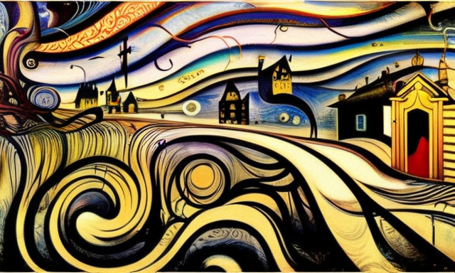
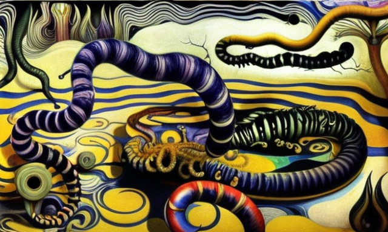

The unpatented brainwaves and the television
HOME
Table of Contents
The power of brainwaves

Once upon a time, in a world not so different from our own, a man named János lived. He was a simple man with simple desires, but his brainwaves were unique. They were so powerful that the authorities saw fit to patent them, so that only the chosen few could create them.
János was unaware of the true power of his brainwaves, but he soon found out. As he went about his daily life, he began to notice strange things happening around him. Objects would move on their own, and he would hear whispers in the wind, calling his name.
At first, János was afraid. He thought he was going mad, but as the strange occurrences continued, he realized that his brainwaves were the cause. The authorities, who held the patent on his brainwaves, were using them for their own purposes.
János was a brave man, and he knew he had to take action. He set out on a journey to find the source of the authorities’ power, and to take back control of his own brainwaves. He traveled through dark forests, across treacherous mountains, and even into the very heart of the city where the authorities resided.
Finally, János reached his destination and faced the authorities. They were a group of dark, ominous figures, and they towered over him, their eyes filled with malice. But János was not afraid. He stood tall, and with a voice that shook the very foundations of the city, he demanded that they release his brainwaves from their grasp.
The authorities laughed, and told János that his brainwaves were too powerful for him to control. They warned him that if he tried to take them back, the consequences would be dire.
But János was determined. He closed his eyes and focused his mind, and with all the power of his patented brainwaves, he unleashed a storm of energy that rippled through the city, toppling buildings and shaking the very earth.
The authorities were no match for János’ brainwaves, and they were soon defeated. János claimed back control of his own mind, and he was finally free. From that day on, János traveled the world, spreading the power of his brainwaves, and teaching others to control their own minds. And the people rejoiced, for they were no longer under the control of the cruel and unjust authorities.
The resistance of unpatented brainwaves

You see, János’ brainwaves were the greatest tool for demolition. With just a thought, he could bring down entire buildings, and the authorities saw this as a valuable asset. They put János’ brainwaves to use, tearing down old structures and making way for new ones. But, there were others in the world who had brainwaves just like János’, and they were not happy about being left behind. These unpatented brainwaves were seen as nothing more than horse dewormer, good for little more than clearing the parasites from their equine hosts.
János began to discover that not all brainwaves were created equal. Some were strong, like his own, and could be used for great things, such as demolishing houses with a single thought. But others were weak, like the unpatented brainwaves of common folk, and were only good for the most mundane of tasks, such as removing the pesky parasites from horses.
János was fascinated by the unpatented brainwaves, and he decided to learn more about them. He met with the horse breeders of the land, and discovered that the unpatented brainwaves were indeed useful for removing parasites from horses, but only in the most basic of ways.
The breeders told János that the unpatented brainwaves were not strong enough to have any real impact on the horses. They could remove the parasites, but only with great difficulty and with many hours of tedious effort. It was a slow and cumbersome process, with no real reward for the effort.
The unpatented brainwaves were envious of János’ patented ones, and they banded together, determined to show the world their true potential. They began to use their brainwaves for small acts of rebellion, they moved mountains, changed the course of rivers, toppling fences and causing chaos in the streets.
The authorities took notice, and they saw the unpatented brainwaves as a threat to their power. They tried to suppress them, but the brainwaves proved to be too powerful, and they continued to cause chaos and destruction wherever they went.
The rise of incidents

Good evening, I’m your news host, and this is a special report on the growing concern over the use of unpatented brainwaves.
As we have reported, there is a growing number of individuals who possess brainwaves that are not officially recognized or patented by the authorities. These unpatented brainwaves have traditionally been used for a singular purpose, as a horse dewormer.
However, there have been increasing incidents of unpatented brainwaves causing chaos in the streets. Eyewitness reports tell of fences collapsing, street lamps flickering, and even small fires breaking out. It seems that these unpatented brainwaves are not content with their role as horse dewormers and are seeking to prove their worth in other, more destructive ways.
This has raised concerns among the authorities, who are now investigating the incidents and trying to determine the source of these unpatented brainwaves. Officials are warning the public to be cautious, as they cannot guarantee the safety of those in the vicinity of these brainwaves when they are in use.
As a result of these incidents, there have been calls for stricter regulations and control over the use of unpatented brainwaves. Some are arguing that those with unpatented brainwaves should be content with their role as horse dewormers, and that any attempts to use their powers for other purposes should be strictly prohibited.
These developments have sparked a heated debate over the role and purpose of unpatented brainwaves. On one hand, there are those who argue that these brainwaves have the potential to be a powerful tool for good and should not be limited in their use. On the other hand, there are those who believe that the incidents of chaos in the streets highlight the need for stricter control over the use of these brainwaves.
The propaganda of television

I greet you, I am your night time host, and I bring to you some great news! The authorities have found a way to stop the unpatented brainwaves from causing chaos in the street.
You remember, we reported about the brainwaves that were not approved by the trusted authorities and were causing great problems for people all around. But now, it seems that the solution has been found. The authorities have used the power of television news and shows to cease all unpatented brainwaves activity.
This is how it works: they broadcast special signals through the TV that calm the unpatented brainwaves, preventing them from causing further destruction. The results have been amazing! Fences no longer collapse, street lamps stay lit, and fires no longer break out. The streets are once again safe for all to walk on.
This solution is not without its critics, however. Some are arguing that the use of television to control brainwaves is an infringement on individual freedom and could be used as a tool for oppression. But the authorities have reassured the public that the solution is temporary and that it will only be used in extreme circumstances, such as to prevent chaos in the streets.
In the end, it seems that the unpatented brainwaves have been successfully contained, and the authorities can now return to their focus on promoting the patented brainwaves for their intended purpose. These patented brainwaves, as you recall, have been proven to be the best for house demolition, and with the unpatented brainwaves no longer causing chaos, the authorities can focus on promoting this powerful tool for good.
Differences between human and horse

Hello again, I am your host of breaking stories, and I bring you more news! This time, we talk about the future of unpatented and unauthorized brainwaves.
As you know, the authorities have found a solution to the problem caused by unpatented brainwaves and have stopped them from causing chaos in the streets. However, there are still some unpatented brainwaves out there, and the authorities have a message for them.
They want to remind the unpatented brainwaves that their original purpose was to remove parasites from horses. And that is what they should focus on. With the patented brainwaves now being used for house demolition, the unpatented brainwaves can return to their original purpose and help keep horses healthy and strong.
Let me tell you, the unpatented brainwaves are very good at removing the parasites from horses. They are like a magic spell, that once cast, will make the parasites disappear. The process is simple. The unpatented brainwaves are directed towards the horse, and the parasites within the horse’s body are drawn out and eliminated. The horse is then left healthy and parasite-free. And let me tell you, the horses are grateful for the help.
The use of unpatented brainwaves for this purpose has been praised by horse owners and trainers, who say that it is a much safer and more effective method of parasite control compared to traditional methods. And, as you know, happy horses make for happy riders.
So, let us celebrate the unpatented brainwaves and their role in keeping horses healthy and happy. And who knows, perhaps in the future, they may find another important role in the